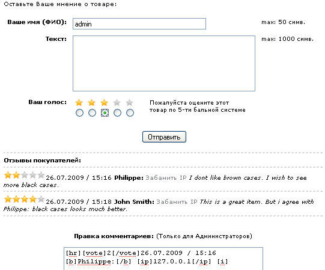
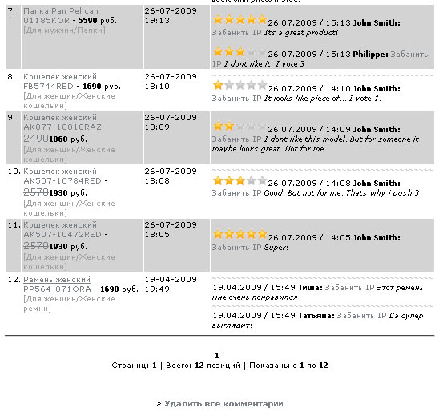

67. Показывать комментарии к
товару:
Разрешать или нет пользователям комментировать
любой товар, а также давать оценку товара от 1 до 5 заезд.
Рекомендуется отключить эту опцию, если админу будет лень админить
комменты.

Админская
часть комментариев:
